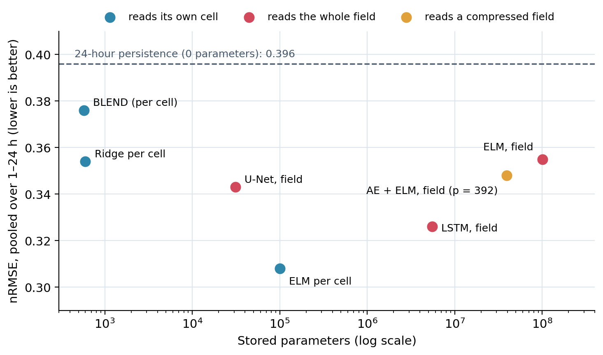

Solar forecasting explained · 22 October 2026 · Manuscript in preparation, open code
How much space is enough for satellite irradiance forecasting?
A satellite gives the irradiance of a whole region every hour. Should a forecaster read the whole map, a small neighborhood, a compressed version of the map, or only the cell it forecasts? This benchmark holds the forecaster fixed and changes only what it reads.
The question
Satellite irradiance arrives as maps. Deep networks such as U-Nets and LSTMs read whole fields, and compression methods shrink the field before a model reads it. Both add inputs and parameters. The benchmark asks how much of that spatial information actually lowers the error of a forecast for each of the next 24 hours, and counts the parameters each route stores.
Data and protocol
- Data: HelioClim-3 global horizontal irradiance (Heliosat-2 method, Meteosat images), distributed by the SoDa service, on 1148 points over Corsica, hourly, 2005–2006.
- Field: each hour is interpolated on a 32 × 32 grid; the 722 cells inside the convex hull of the points are scored.
- Split: 2005 for training, 2006 for testing.
- Inputs and outputs: every model reads the 24 past hourly values of what it forecasts, with no calendar or exogenous input, and forecasts the next 24 hours at once.
- Scoring: only where the cell's own solar elevation exceeds 5°; errors pooled over all scored cells; nRMSE divided by the mean scored test observation, 407.9 W/m².
- Other scores: the NICE family against persistence and the temporal gamma index with its pass rate (GPR).
The theory
Every model forecasts the next 24 hourly values of a cell from 24 past hourly values; only what it reads changes: its own cell, a \(k\times k\) patch, the whole field, or a compressed field.
Definitions
- \(I_{c,t}\)
- irradiance of cell \(c\) at hour \(t\) (722 scored cells)
- \(\mathbf z_{c,t}\)
- input: \(I_{c,t-23:t}\) (one cell), or the same hours on a patch, the whole field, or a compressed field (Radon, DCT, wavelet, PCA, random projection, subsampling, autoencoder)
- \(\hat{\mathbf I}_{c,t+1:t+24}\)
- the 24 forecasts, all at once
Extreme learning machine (ELM)
For an input row \(\mathbf x\in\mathbb R^{d}\), a hidden layer of \(L\) neurons with weights \(W\in\mathbb R^{L\times d}\) and biases \(\mathbf b\in\mathbb R^{L}\) drawn at random and never trained:
$$\mathbf h(\mathbf x)=g\!\left(W\mathbf x+\mathbf b\right),$$ $$\hat{\mathbf y}=\mathbf h(\mathbf x)^{\top}\beta .$$Only the output weights \(\beta\) are fitted, in closed form, on the \(N\) training rows stacked in \(H\in\mathbb R^{N\times L}\) and the targets \(Y\):
$$\beta=\left(H^{\top}H+\lambda I\right)^{-1}H^{\top}Y\quad(\text{ridge}),$$ $$\beta=H^{+}Y\quad(\lambda\to0,\ \text{Moore–Penrose pseudo-inverse}).$$Training is one linear solve, so it takes seconds; several outputs share the same \(H\). Stored parameters for one output: \(dL+L+(L+1)\) (input weights, biases, output weights with intercept). ELM: Huang, Zhu and Siew (2006).
Reference forecasts
At origin \(t\) and horizon \(h\), with cycle length \(T\) (24 hourly steps for a day):
$$\hat y^{\,\mathrm{P}}_{t+h}=y_t\quad(\text{persistence}),$$ $$\hat y^{\,\mathrm{C}}_{t+h}=y_{t+h-T}\quad(\text{cyclic persistence: same phase, previous cycle}).$$Scores
Errors are pooled over all scored cells, lead times \(h=1,\dots,24\) and test hours where the cell's own solar elevation exceeds 5°:
$$\mathrm{nRMSE}=\frac{1}{\bar I}\sqrt{\frac{1}{|\mathcal S|}\sum_{(c,t,h)\in\mathcal S}\left(I_{c,t+h}-\hat I_{c,t+h}\right)^2},$$ $$\bar I=407.9\ \mathrm{W/m^2}\ (\text{mean scored test observation}).$$NICE against persistence and the gamma pass rate GPR of the temporal γ-index complete the table; the parameter count is what each route stores.
Assumptions and validity
One region (Corsica), one satellite product (HelioClim-3), 2005 for training and 2006 for testing, hourly steps: a benchmark result, not a general law. Intra-hour nowcasting driven by cloud motion can behave differently.
Results (from the public repository)
nRMSE pooled over 1 to 24 hours ahead and at two lead times; parameters stored, in thousands (k) or millions (M); GPR = gamma pass rate, mean of six lead times.
| Model | nRMSE | 1 h | 24 h | Parameters | GPR |
|---|---|---|---|---|---|
| ELM per cell | 0.308 | 0.156 | 0.325 | 100.4k | 58.6 % |
| LSTM, whole field | 0.326 | 0.182 | 0.343 | 5.5M | 54.2 % |
| U-Net, whole field (8 channels) | 0.343 | 0.205 | 0.346 | 31.2k | 42.7 % |
| Autoencoder + ELM, field (p = 392), best compression | 0.348 | 0.181 | — | 39.4M | — |
| Ridge per cell | 0.354 | 0.175 | 0.353 | 600 | 57.1 % |
| ELM, whole field | 0.355 | 0.174 | 0.376 | 100.7M | 48.6 % |
| BLEND | 0.376 | 0.226 | 0.396 | 576 | 50.6 % |
| Persistence, 24 h (same hour yesterday) | 0.396 | 0.396 | 0.396 | 0 | 61.2 % |
| Persistence (last hour) | 0.998 | 0.320 | 0.396 | 0 | 19.8 % |

The per-cell ELM stores about a thousandth of the parameters of the whole-field ELM (100.4k against 100.7M) and has the lowest pooled error. None of the seven compression methods (Radon transform, DCT, wavelet, PCA, random projection, subsampling, autoencoder) reaches it, and neither do the U-Net and the LSTM reading the whole field. Enlarging the input from one cell to a 3 × 3 patch does not help either (0.3087 against 0.3077 for a single cell).
Worked example: what 0.308 means in W/m²
The nRMSE is divided by the mean scored observation of the test year, 407.9 W/m². An nRMSE of 0.308 is therefore an RMSE of about 0.308 × 407.9 ≈ 126 W/m²; the whole-field ELM, at 0.355, is about 145 W/m². The per-cell model is about 19 W/m² better, with a thousand times fewer stored parameters.
How to read it
On this region and this record, the hourly history of the cell itself carries most of the information an hour-by-hour forecast of the next day can use; the rest of the map adds parameters faster than it removes error. This is one region, one satellite product and one two-year split: a benchmark result, not a general law. Intra-hour nowcasting driven by cloud motion can behave differently.
Reproduce it
The repository contains the paper's own MATLAB and Python files and the two-year HelioClim-3 extract. run_all.ps1 rebuilds the result tables from the archives in about 12 seconds; -Mode light fits every model once on a laptop and reproduces the paper's values to within 0.004; the full protocol (median of 50 random hidden layers) matched the paper in every column on the steps tested.
git clone https://github.com/cyrilvoyant/cell-vs-field-irradiance.git
powershell -ExecutionPolicy Bypass -File .\run_all.ps1
powershell -ExecutionPolicy Bypass -File .\run_all.ps1 -Mode lightThe code is under the MIT license. HelioClim-3 data are distributed by the SoDa service under its own terms of use; the extract is included so that the benchmark runs as published.
MATLAB and Python codeArchived code: doi:10.5281/zenodo.23562557Related: how much model is enough?
Links
| Article | C. Voyant, A. Kazantzidis, J. Kleissl, How Much Space Is Enough for Short-Term Satellite Irradiance Forecasting?, manuscript in preparation |
|---|---|
| Code | github.com/cyrilvoyant/cell-vs-field-irradiance |
| Archive (all versions) | doi:10.5281/zenodo.23562557 (Zenodo) |
| Software Heritage | permanent archive of the repository |
| Data | HelioClim-3 (Heliosat-2), SoDa service, under its terms of use |
| The approach | Concentric modelling: understand before you compute |
| Author | Cyril Voyant (Mines Paris – PSL, O.I.E.) · ORCID · www.cyrilvoyant.com |
Authors and foundations
Manuscript authors: Cyril Voyant (Mines Paris – PSL, O.I.E.), Andreas Kazantzidis (University of Patras), Jan Kleissl (UC San Diego). How Much Space Is Enough for Short-Term Satellite Irradiance Forecasting?, manuscript in preparation. Cyril Voyant wrote this page.
HelioClim-3 data: SoDa service (Heliosat-2 method). ELM: Guang-Bin Huang, Qin-Yu Zhu and Chee-Kheong Siew, Extreme learning machine: Theory and applications (2006). U-Net: Ronneberger, Fischer and Brox (2015). LSTM: Hochreiter and Schmidhuber (1997).